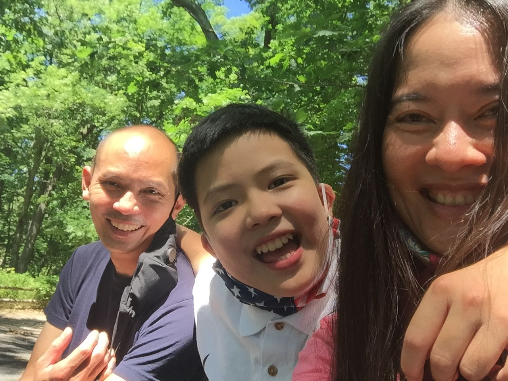

Meet Massachusetts Homeschoolers: Tanny’s Tale
By Varisara Gerjarusak
A rising high school junior, about six-feet tall, fiddles with the automatic water pump attached to the top of a three-gallon plastic water dispenser sitting on the kitchen counter. The dispenser has a long, thin, flexible plastic tube that’s meant to be submerged in the water. When the button is pressed, the tube sucks the water upward, and the water flows through the stainless steel spout and fills a cup in no time. I can see the water level in the three-gallon container is only a few inches high, and the plastic tube curls up, its end tipping above the water level. The boy keeps pressing the button, only to hear a strange gurgling sound. A tiny bit of water flows out of the container. With about a quarter of his water bottle filled, he shrugs, and walks away.
I am reminded of a similar scene two weeks earlier at our home, when my 11-year-old son, Tanny, was in the same position. He was filling his cup when the water level in the gallon container became low. Just when I was about to step in to offer help, he snatched the automatic dispenser and to my surprise, raised it armlength upward so that the end of the flexible plastic tube was fully submerged under water, and filled up his cup. Later I told my husband and he said Tanny saw him tilt the gallon container earlier, when the water in the container became low while he was filling his cup. So Tanny had seen one way to work the dispenser when the water level is low, but chose his own way of dealing with it, perhaps just to have fun as he always does with anything he finds interesting.
We moved to Wayland, MA from Thailand in the spring of 2016, a little over four years ago and just a few months before Tanny turned seven. My husband and I were formally educated in the US and spent many years in the Northeast. But we were students then, not parents of a child on the autism spectrum. We had been taking trips to the US once or twice a year since he was 3, but I didn’t think that was enough. Our goal in coming to the US was to integrate Tanny into mainstream education. Also, we wanted him to see his doctors and therapists regularly and receive treatments that are not readily available in Thailand.
The summer of 2016, after much confusing back and forth communication with the school district, we attended our first AHEM Getting Started Homeschooling meeting and learned that there was another option that we had never thought of pursuing. Our families wondered, along with us, why would we settle all the way across the world only to homeschool our special child? We were hesitant and doubtful, but feel confidently four years later that the decision we made out of fear and doubt is one of the most wonderful presents we could have ever given our child.
Some people say to us that homeschooling doesn’t work for children with autism because they need to spend time in a structured setting with peers of their own age so they can learn from others. But we have been running the Son-Rise Program since Tanny was three years old. Son-Rise is a home-based program run by parents who have gone to take classes at the Autism Treatment Center of America in Sheffield, MA. We love this gentle approach of spending time with our child and were hesitant to give it up in lieu of full-time education. We learned that the presence of other children would be oblivious to our child if he were still in his own world. During our years in Thailand we would spend time in the Son-Rise playroom with Tanny while he went to pre-school a few days per week. And before he turned six, we stopped all schooling and other therapeutic approaches altogether and spent 30 hours with Tanny in our home-based Son-Rise playroom. Looking back, it also took us quite some time before our confidence in the Son-Rise approach reached the point of no return.
Upon arrival in Wayland, we were told to get a neuropsych evaluation from a prominent neuropsychologist. It was something new and seemed promising. After years of Son-Rising we were certain of Tanny’s progress. Tanny needed an English-Thai translator throughout the three-day evaluation period. At the meeting we had with the two doctors to go over Tanny’s report at the end of the evaluation, one doctor looked reluctant after I questioned his recommendation of putting Tanny in full-time school. “How about a mix of schooling and Son-Rise?” I asked. He said the window of opportunity would soon be closing should I keep Tanny home and shook his head, saying “also he really needs to catch up with his math.” He smiled sympathetically at me. My heart shattered. I had done it all wrong after all this time.
I have had a few heartbreaking incidents in my life, one being the time Tanny received his diagnosis when he was two years and four months old. This was another one that stirred my gut instinct once again. I recalled a Facebook post a good friend of mine had shared that mentioned AHEM. I looked at the AHEM website and registered for an upcoming meeting. Afterward, I hung around and talked to the speakers and mentioned Son-Rise. One of the speakers encouraged me to keep pursuing what felt right to me. The grim path was lit. I knew then what my next step would be.
We worked on the house, renovated our basement and turned it into Tanny’s Son-Rise playroom. I worked on the education plan. The school didn’t give us any fuss, even offered to provide services for Tanny such as speech, OT and PT, which we accepted. Tanny spent three hours per week at school for such services. He also needed an English-Thai translator during his speech evaluation at school. He knew some English from the month-long trips we had taken to the US to visit his doctors. He also went to a bilingual early intervention center in Thailand. He had one English-speaking speech therapist and one Thai speech therapist. I have always read to Tanny in both Thai and English since he was a baby.
Then something magical happened. During the first year we were here, Tanny started reading in English on his own. Tanny did not know how to read in Thai or English prior to our move to the US. Within six months, he started reading street signs and jumble words on car license plates. He was really into maps and directions. He has such a great memory and remembered the street names once we read them to him. Then he started reading everything surrounding him: junk mail, random ads, IKEA manuals, Lakeshore catalogues, etc. We never taught him how to read. We continued to only speak Thai to him at home. It turned out, his speaking Thai is way more fluent than his English considering he didn’t have much exposure to English-speaking natives. But he could read in English, not at all in Thai.
His desire to make sense of this new world he has just entered keeps him motivated to read more and more. He moved on to reading our entire car manual, a New York City guide book, children’s picture books, and more. He would ask an adult nearby when he came across words he didn’t understand. Sometimes he asked me words I didn’t even know of such as “atheist” and “legislative.” He would smile and look at me and say, “Mom, that’s a new word I’ve heard for the first time!” He might ask me the difference between “color” and “colour.” But mostly, he would read the same material intently over and over again. This past year, he would pick up whatever book I was reading and read the same, though only a bit just to fulfill his curiosity. One time he told me, “Mom, did you know Louisa May Alcott’s dad was mentioned in this book?” Of course I did not remember who Amos Bronson Alcott was until Tanny reminded me.
Within a year in America Tanny was reading fluently, and it showed us how intelligent and capable he is when he gets to do what he really wants. We are certain that we are on the right track, after all.
We have decided to move back to Thailand to be closer to our families given the current pandemic. Tanny has come so far from being non-verbal to being bilingual. Let’s see in a year how much Thai Tanny will read. More report to come!
Varisara studied engineering and design as an undergraduate at UPenn, then went on to architecture school at MIT. She practiced architecture in Thailand and shifted her interest from design to project development and management. She worked on various hotel and resort projects and was executive vice president leading a hotel development team at a publicly listed company. She gradually dropped her working hours to spend time with her son and started working from home when he received his autism diagnosis, becoming a full-time Son-Rise autism mom just before moving to Wayland in 2016. She enjoys learning about children and coming up with creative cooking, reading, art, and game ideas for her son.